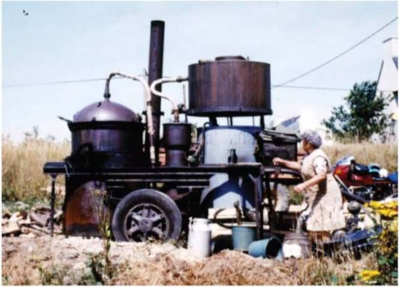

Distillation de
l'eau-de-vie
de marc


⟹ Savoir-faire & Distillation ⟸
La distillation du marc appartient à une très ancienne logique paysanne : ne rien perdre de la vendange. Après le pressurage, les pellicules, pépins et parfois rafles conservent encore de l’alcool, des matières aromatiques et une part de l’identité du raisin. Fermenté puis distillé, ce résidu devient une eau-de-vie de marc. Dans un territoire viticole aussi ancien et étendu que le Languedoc, cette valorisation des sous-produits de la vigne a longtemps complété naturellement le travail du vigneron.
La technique elle-même s’inscrit dans l’histoire beaucoup plus vaste de l’alambic. Les savoirs antiques sur la condensation furent perfectionnés dans le monde arabo-musulman médiéval, puis diffusés en Occident. À partir du Moyen Âge et surtout de l’époque moderne, la distillation du vin et des résidus de vinification se développe dans les régions viticoles européennes. L’eau-de-vie devient à la fois produit marchand, remède, boisson de conservation et ressource domestique.

Dans l’Aude viticole, la distillation s’inscrivait dans le calendrier qui suivait les vendanges. Les marcs étaient conservés en attendant le passage de l’alambic. La chauffe libérait les vapeurs alcooliques ; celles-ci étaient conduites vers un serpentin refroidi où elles se condensaient. Le distillateur devait ensuite séparer les différentes fractions de la chauffe afin de conserver la partie la plus équilibrée et aromatique. Cette maîtrise du feu, des températures, des odeurs et du débit relevait autant de l’expérience que de la technique.
La figure la plus emblématique fut celle du bouilleur ambulant. Avec son alambic monté sur une charrette puis, plus tard, sur une remorque ou un véhicule, il se déplaçait de commune en commune. Son arrivée créait un véritable rendez-vous saisonnier : on apportait les matières à distiller, on surveillait la chauffe et l’on échangeait autour de l’appareil. La distillation était donc aussi un fait social, particulièrement visible dans les campagnes viticoles et fruitières.
Il convient de distinguer le bouilleur de cru, propriétaire ou récoltant faisant distiller les produits provenant de sa récolte, du distillateur ambulant, professionnel qui exploite l’alambic. Le fameux « privilège » des bouilleurs de cru désigne historiquement un avantage fiscal et non un droit général de distiller librement. La fiscalité des alcools, progressivement renforcée par l’État, a encadré de plus en plus précisément les quantités, déclarations, périodes et lieux de distillation. La suppression de la transmission de certains avantages anciens au XXe siècle a contribué au déclin progressif de l’image traditionnelle du bouilleur de cru familial.
Dans le Midi, cette histoire est indissociable de l’essor spectaculaire de la viticulture au XIXe siècle, de la crise du phylloxéra puis de la reconstitution du vignoble. L’abondance des volumes vinifiés produisait mécaniquement de grandes quantités de marcs. Ceux-ci pouvaient être distillés pour obtenir des eaux-de-vie, mais aussi valorisés dans les distilleries pour récupérer alcool, tartrates, pépins et autres sous-produits. La distillation a ainsi joué un rôle économique important dans l’organisation de la filière viticole languedocienne.
Le Marc du Languedoc possède par ailleurs une histoire réglementaire ancienne : les eaux-de-vie de marc originaires du Languedoc font l’objet d’un texte de protection dès 1942. Aujourd’hui, l’indication géographique « Marc du Languedoc » ou « Eau-de-vie de marc du Languedoc » couvre notamment l’Aude, l’Hérault, le Gard et les Pyrénées-Orientales. Elle distingue des eaux-de-vie blanches et des eaux-de-vie vieillies sous bois et rattache leur production à des raisins issus d’aires viticoles languedociennes définies.
Le vieillissement en bois a donné naissance à une autre dimension du produit. Au contact du chêne, l’eau-de-vie s’assouplit, se colore et développe progressivement des notes épicées, vanillées, grillées ou de fruits secs. Les versions blanches conservent davantage les caractères floraux et fruités du raisin ; les marcs issus de cépages aromatiques peuvent ainsi présenter une expression particulièrement marquée.
Aujourd’hui, les alambics ambulants sont beaucoup plus rares et la réglementation n’a plus rien de celle des anciennes campagnes de distillation. Pourtant, dans l’Aude et le Languedoc, le marc demeure le témoin d’une économie rurale fondée sur l’usage complet de la récolte. Derrière le verre d’eau-de-vie se lisent plusieurs siècles de viticulture, de fiscalité, de savoir-faire du feu et de sociabilité villageoise.
Cette tradition doit beaucoup à la figure du bouilleur ambulant, un distillateur itinérant qui sillonnait autrefois les villages, alambic sur le dos ou sur charrette, pour transformer le marc et les fruits de chaque famille de vignerons. Le « privilège de bouilleur de cru », instauré sous Napoléon, permettait à chaque récoltant de distiller sa propre production en franchise d'une partie de la taxe — un droit qui, depuis 1959, ne se transmet plus et s'éteint peu à peu avec ses derniers détenteurs.
Dans l'Aude comme dans le reste du Languedoc, quelques distillateurs continuent chaque automne et chaque hiver leurs tournées de village en village, perpétuant un geste inchangé depuis des générations : le feu de bois sous l'alambic, la vapeur qui se charge des arômes du marc, et la patience du « coeur de chauffe » qu'il faut savoir isoler.
Ce savoir-faire est aujourd'hui officiellement reconnu : l'indication géographique « Marc du Languedoc », homologuée par l'État, protège et valorise cette eau-de-vie de marc de raisin élaborée dans toute la région, dont l'Aude reste l'un des terroirs historiques.
Le feu de bois sous l'alambic, la vapeur qui se charge d'arômes de fruits mûrs : ce sont trois mois de tournées qui rythment encore l'automne dans les villages.
— Tradition orale des bouilleurs ambulantsVillages viticoles de l'Aude : Limoux, Lagrasse, Olonzac, autant d'étapes possibles sur le passage des distillateurs ambulants.
Caves coopératives : plusieurs proposent une découverte des alambics et de l'histoire du marc du Languedoc.
Marchés de pays : l'occasion de rencontrer producteurs et distillateurs et de goûter leurs eaux-de-vie.
Canal du Midi : ses berges relient plusieurs villages vignerons où la tradition du marc reste vivace.